Vecka 41 · Del 2 av 3
Del 2: Y, Δ och trefaseffekt
1 Översikt
Det här ska du kunna
- Beräkna ström och effekt i symmetrisk Y- och Δ-last.
- Använda motorns märkning och skilja axeleffekt från inmatning.
Fundera först: Har en lastgren samma spänning i Y som i Δ vid samma linjespänning? Svaret finns i teorin nedan.
Så gör du
- Läs teorin ett avsnitt i taget (7 korta avsnitt). Sist i varje avsnitt står vilka övningar du kan göra direkt.
- Följ exemplen med papper och räknare, steg för steg. Gissa nästa steg innan du läser det.
- Gör övningarna 2.1–2.10. Fastnar du: Ledtråd 1 visar vilket samband du behöver och var i teorin det förklaras. Ledtråd 2 visar hur du börjar och Ledtråd 3 exemplet som räknar samma sorts uppgift med andra tal. Öppna facit när du har ett eget svar.
- Lämna in veckans uppgifter: Veckans inlämning.
Så skriver du en lösning som går att följa
1. Givet och sökt
Skriv av värden, enheter och vad du ska bestämma.
2. Samband och villkor
Välj formel eller princip. Kontrollera koppling, driftfall och antaganden.
3. Uträkning och kontroll
Omvandla enheter, sätt in värden och tolka resultatet.
I resonemangsfall: koppla observation till en motiverad slutsats.
Lärarens presentation · PDF · Räknarhjälp · Formelblad
Förkortningar och beteckningar i den här delen (11)
- S
- skenbar effekt. Spänning gånger ström: S = U · I. Det som kablar och generatorer måste dimensioneras för. Trefas: S = √3 · UL · IL, med linjespänning och linjeström. Enhet: VA, kVA.
- P
- aktiv effekt. Den effekt som verkligen blir värme eller arbete. Trefas: P = √3 · UL · IL · cos φ. Enhet: W (watt), kW.
- R
- resistans. Resistorns motstånd mot ström. Beror inte på frekvensen. Enhet: Ω (ohm).
- Q
- reaktiv effekt. Effekt som pendlar fram och tillbaka mellan källan och spolar eller kondensatorer utan att förbrukas. Ger ändå ström i ledningarna. Trefas: Q = √3 · UL · IL · sin φ. Enhet: var, kvar.
- PF
- effektfaktor (engelska: power factor). Hur stor del av den skenbara effekten som är aktiv: PF = P/S, ett tal mellan 0 och 1. Lägre PF ger större ström för samma aktiva effekt.
- cos φ
- cosinus fi. Cosinus av fasvinkeln mellan spänning och ström. För ren sinus är cos φ = PF, därför står cos φ ofta på motorernas märkskylt.
- φ
- fasvinkel (fi). Hur mycket en kurva ligger före eller efter en annan, i grader. Mellan spänning och ström: positiv φ betyder att strömmen släpar (induktiv last). Enhet: °.
- VA, kVA
- voltampere. Enheten för skenbar effekt S. 1 kVA = 1 000 VA.
- Hz
- hertz. Enheten för frekvens: 1 Hz är en period per sekund. Elnätet ombord är ofta 50 eller 60 Hz. 1 kHz = 1 000 Hz.
- RMS
- effektivvärde (engelska: root mean square, som betyder kvadratiskt medelvärde). Det värde som ger samma värme i en resistor som en lika stor likspänning. När en spänning anges utan annat, till exempel 230 V eller 12,00 V RMS, är det effektivvärdet. Multimetern visar effektivvärdet. Behöver du skilja effektivvärdet från andra värden skrivs det URMS (eller IRMS för ström). Enhet: V eller A.
- var, kvar
- voltampere reaktiv. Enheten för reaktiv effekt Q. 1 kvar = 1 000 var. Skrivs med små bokstäver.
2 Teori
Ett avsnitt i taget: öppna det, läs, och gör sedan övningarna som står sist i avsnittet. Formeln bredvid rubriken är det viktigaste i avsnittet.
1Vilken spänning och ström?
Linjevärden gäller matningsledningarna. Grenvärden gäller varje lastgren.
I Y är linjeström och grenström lika.
I Δ är grenspänning och linjespänning alltid lika.
Axeleffekt är mekanisk uteffekt. Elektrisk inmatning beräknas med η.
2Y- och Δ-kopplingY: Ugren = UL/√3 Δ: Ugren = UL
I Y ligger varje lastgren mellan en fas och stjärnpunkten: Ugren = UF.
I Δ ligger varje lastgren mellan två faser: Ugren = UL.
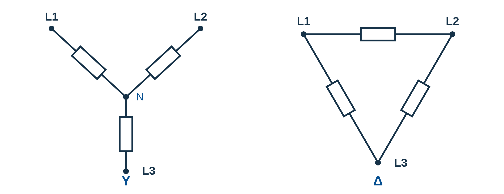
Y: Ugren = UL/√3 Δ: Ugren = UL
Samma grenimpedans får större spänning i Δ.
Kopplingsbilden visar principen, inte en plintanvisning.
Öva nu: Övning 2.1
3Linjeström och grenströmY: IL = Igren Δ: IL = √3 · Igren
I Y går linjeströmmen rakt genom en gren: IL = Igren.
I Δ är linjeströmmen en vektoriell skillnad: IL1 = I12 − I31.
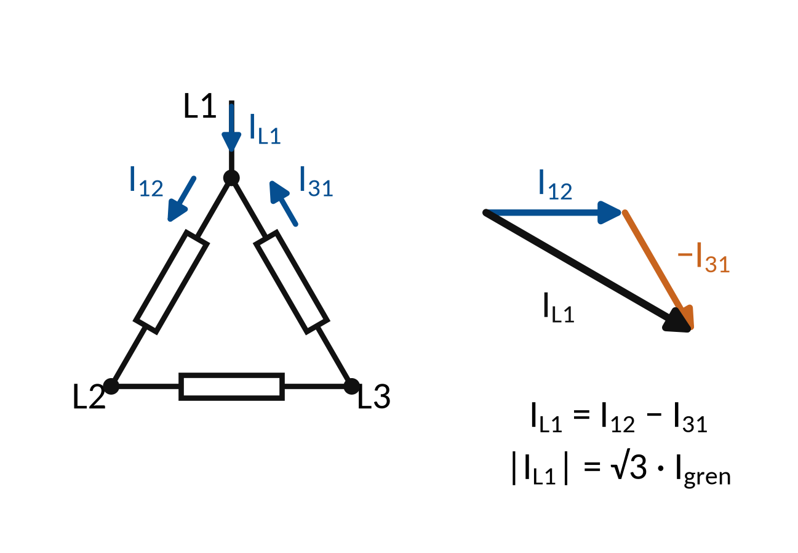
Y: IL = Igren Δ: IL = √3 · Igren
440 V över tre grenar på 55 Ω i Δ:
Igren = 8,0 A och IL ≈ 13,9 A.
Öva nu: Övning 2.2, Övning 2.3
4TrefaseffektS = √3 ULIL P = √3 ULIL cos φ
För symmetrisk trefas används linjespänning och linjeström.
Vid sinusform gäller PF = cos φ.
Osymmetrisk last: summera fasernas aktiva effekter.
S = √3 ULIL P = √3 ULIL cos φ
440 V, 20 A och cos φ = 0,85 ger S ≈ 15,2 kVA och P ≈ 13,0 kW.
Öva nu: Övning 2.4, Övning 2.5, Övning 2.10
5Motorns märkningNätets UL = högre märkvärde: Y
Märkningen Δ/Y 230/400 V anger nätets UL för varje koppling.
Valet beror på matning och faktisk motormärkning.
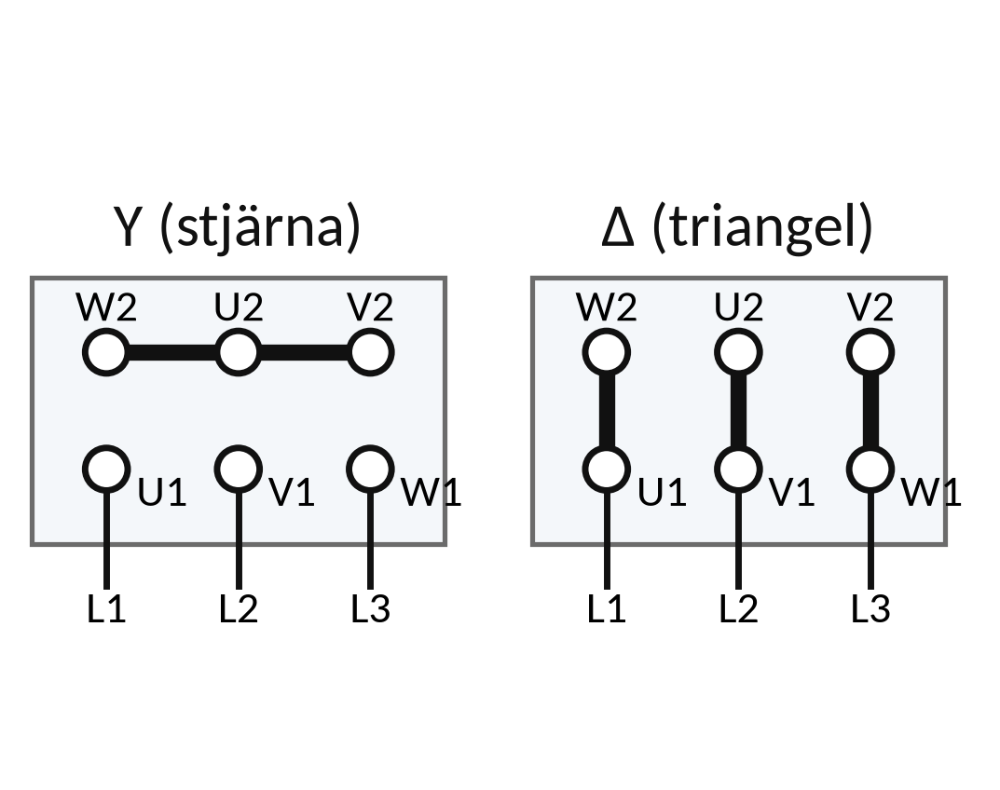
Nätets UL = högre märkvärde: Y
Nätets UL = lägre märkvärde: Δ.
Ombord: en motor Δ/Y 440/760 V på 440 V-nät kopplas i Δ.
Öva nu: Övning 2.6, Övning 2.7
6Axeleffekt och elektrisk effektPin = Paxel/η
Motorns angivna nyttiga effekt är ofta mekanisk axeleffekt.
Förlusten gör att den elektriska inmatningen är större.
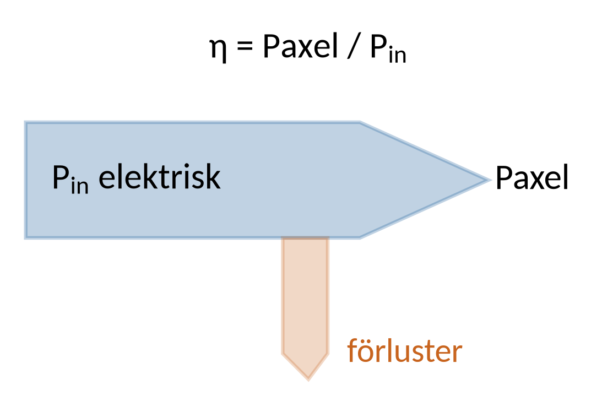
Pin = Paxel/η
Paxel = 11 kW, η = 0,90 ger Pin ≈ 12,2 kW.
Vid 440 V och PF = 0,85 blir IL ≈ 18,9 A.
Öva nu: Övning 2.8
7TrefastransformatornU1,gren/U2,gren = N₁/N₂
En transformator kopplar magnetiskt mellan lindningar.
Omsättning per lindning måste skiljas från linjeomsättning.
U1,gren/U2,gren = N₁/N₂
I uppgifterna med angivna linjespänningar används S = √3 ULIL.
Y/Δ och kopplingsgrupp påverkar sambandet mellan lindningar.
Öva nu: Övning 2.9
3 Exempel
Följ exemplet steg för steg med papper och räknare. Försök själv med nästa steg innan du läser det. Övningarna använder samma metod med andra tal.
E1Samma resistorer i Y och Δ
Tre resistorer på 20 Ω ansluts till fartygets symmetriska 440 V mellan faserna.
Y: IL = (UL/√3)/R
Δ: IL = √3 · (UL/R)
- Y: Ugren = 440/√3 ≈ 254 V. IL ≈ 254/20 = 12,7 A.
- Δ: Ugren = 440 V. Igren = 440/20 = 22 A.
- Δ: IL = √3 · 22 ≈ 38,1 A.
Vid samma linjespänning och samma grenresistans blir linjeströmmen tre gånger större i Δ.
E2Motorström från axeleffekt
Motor: Paxel = 3,0 kW, η = 0,80, PF = 0,75 och UL = 440 V ombord. Symmetrisk trefas.
Pin = Paxel/η IL = Pin/(√3 ULPF)
- Pin = 3,0/0,80 = 3,75 kW = 3 750 W.
- IL = 3 750/(√3 · 440 · 0,75) ≈ 6,56 A.
- Pförlust = 3,75 − 3,0 = 0,75 kW.
Effektfaktor och verkningsgrad används i olika steg. η omvandlar uteffekt till inmatning.
4 Övningar
Räkna på papper. Bocka av en övning när du har kontrollerat ditt svar mot facit. Avbockningen sparas i den här webbläsaren.
Övning 2.1: Y-lastens grenspänning
Tre lika resistorer på 40 Ω kopplas i Y till 400 V linjespänning. Bestäm grenspänningen.
Givet: Landström vid kaj, 50 Hz. Symmetrisk källa och tre lika resistorer på 40 Ω. UL = 400 V RMS.
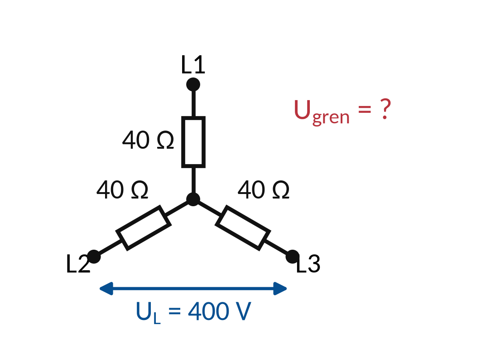
Ledtråd 1: vilket samband?
Använd Y: Ugren = UL/√3. Läs Teori 2: Y- och Δ-koppling.
Ledtråd 2: hur börjar jag?
UL är linjespänningen och Ugren spänningen över en av resistorerna i Y-lasten. Räkna ut grenspänningen från linjespänningen. Resistansen behövs först i nästa uppgift.
Ledtråd 3: steg för steg med andra tal
1) I Y ligger varje resistor över fasspänningen, inte över linjespänningen. 2) Dela UL med √3. Resistansen påverkar inte grenspänningen. Exempel ombord: tre resistorer på 20 Ω i Y till 440 V ger Ugren = 440/1,732 ≈ 254 V.
Facit
Ugren = 400/1,732 ≈ 231 V.
Svar: Ugren ≈ 231,0 V
Övning 2.2: Ström i Y
Använd Y-lasten i föregående övning. Bestäm grenströmmen och linjeströmmen.
Givet: Landström vid kaj, 50 Hz. Y-last med tre 40 Ω-resistorer och UL = 400 V. Ugren = 400/√3 V.
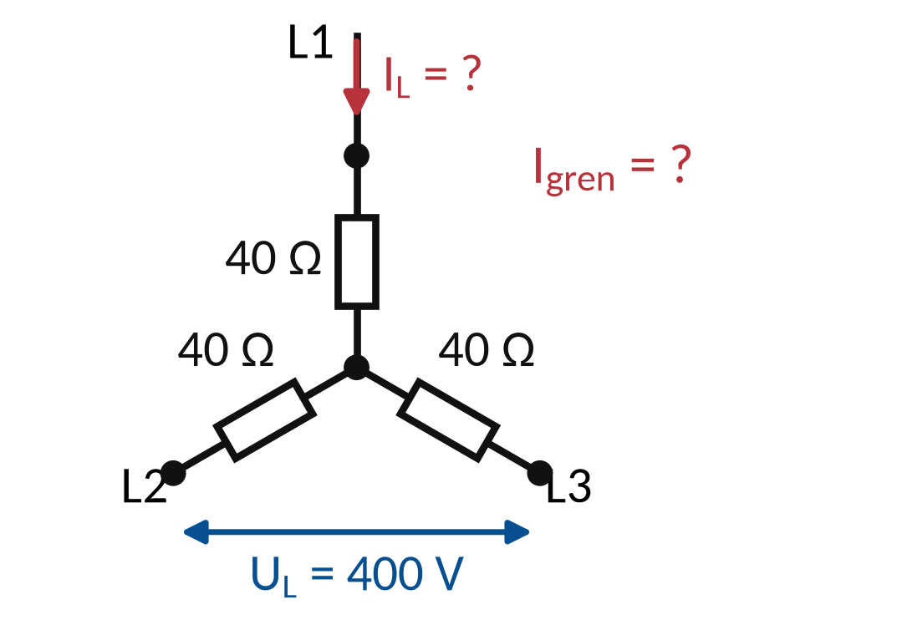
Ledtråd 1: vilket samband?
Använd Igren = Ugren/R; Y: IL = Igren. Läs Teori 3: Linjeström och grenström.
Ledtråd 2: hur börjar jag?
I Y är linjeströmmen IL och grenströmmen Igren lika, eftersom linjeströmmen går rakt genom grenen. Räkna grenströmmen med Ohms lag.
Ledtråd 3: steg för steg med andra tal
1) Räkna grenströmmen med Ohms lag: Igren = Ugren/R. 2) I Y går linjeledarens ström rakt in i grenen, så IL = Igren. Exempel ombord: Ugren = 254 V och R = 20 Ω ger Igren = 254/20 = 12,7 A och IL = 12,7 A.
Facit
Igren = 231/40 ≈ 5,77 A. IL = 5,77 A.
Svar: IL ≈ 5,77 A
Övning 2.3: Samma resistorer i Δ
Tre resistorer på 40 Ω kopplas i Δ till 400 V. Bestäm grenströmmen och linjeströmmen.
Givet: Landström vid kaj, 50 Hz. Symmetrisk Δ-last, tre resistorer på 40 Ω och UL = 400 V RMS.
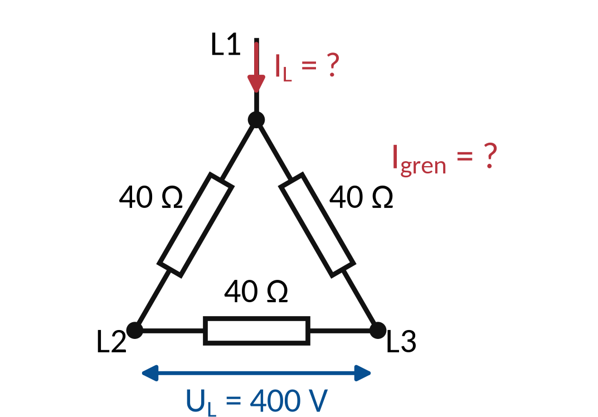
Ledtråd 1: vilket samband?
Använd Δ: Ugren = UL; Igren = Ugren/R och IL = √3 · Igren. Läs Teori 3: Linjeström och grenström.
Ledtråd 2: hur börjar jag?
I Δ är linjeströmmen skillnaden mellan två grenströmmar, räknad som visare. Räkna ut grenströmmen och multiplicera sedan med √3 för att få linjeströmmen.
Ledtråd 3: steg för steg med andra tal
1) I Δ ligger varje resistor mellan två faser: Ugren = UL. 2) Grenströmmen: Igren = UL/R. 3) Linjeströmmen: IL = √3 · Igren. Exempel ombord: 20 Ω i Δ till 440 V ger Igren = 22 A och IL = 1,732 · 22 ≈ 38,1 A. Rimlighet: samma resistorer tar tre gånger så stor linjeström i Δ som i Y.
Facit
Igren = 400/40 = 10 A. IL = 1,732 · 10 ≈ 17,3 A, tre gånger linjeströmmen i Y.
Svar: Igren ≈ 10,0 A · IL ≈ 17,3 A
Övning 2.4: Aktiv effekt
En symmetrisk trefaslast har UL = 400 V, IL = 10 A och cos φ = 0,80. Beräkna P.
Givet: Landström vid kaj, 50 Hz. Symmetrisk sinusformad last, UL = 400 V, IL = 10 A, cos φ = 0,80.
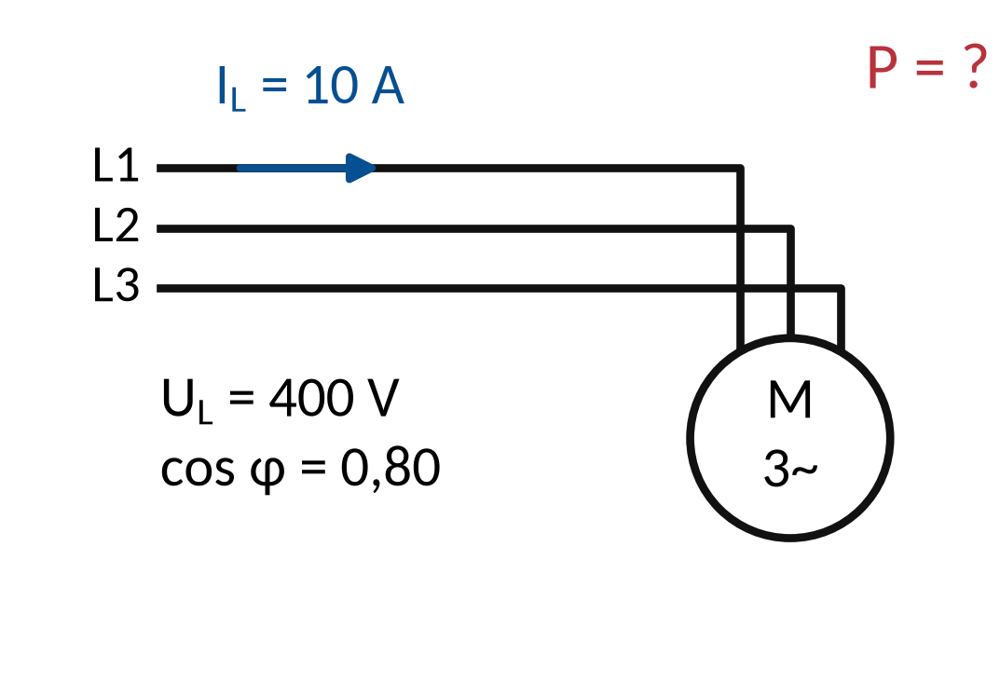
Ledtråd 1: vilket samband?
Använd P = √3 · UL · IL · cos φ. Läs Teori 4: Trefaseffekt.
Ledtråd 2: hur börjar jag?
P är den totala aktiva effekten i alla tre faserna. UL och IL är linjevärden (effektivvärden). Multiplicera de fyra faktorerna. Svaret blir i W – dela med 1 000 för kW.
Ledtråd 3: steg för steg med andra tal
1) Kontrollera att du har linjespänning, linjeström och effektfaktor. 2) Multiplicera √3 · UL · IL · cos φ. 3) Gör om W till kW. Exempel ombord: UL = 440 V, IL = 20 A och cos φ = 0,85 ger P = 1,732 · 440 · 20 · 0,85 ≈ 12 960 W ≈ 12,96 kW.
Facit
P = 1,732 · 400 · 10 · 0,80 ≈ 5 540 W ≈ 5,54 kW.
Svar: P ≈ 5,54 kW
Övning 2.5: Skenbar och reaktiv effekt
Samma last som i föregående övning är induktiv och sinusformad. Beräkna S och Q.
Givet: Landström vid kaj, 50 Hz. UL = 400 V, IL = 10 A, cos φ = 0,80. Symmetrisk last med rena sinussignaler.
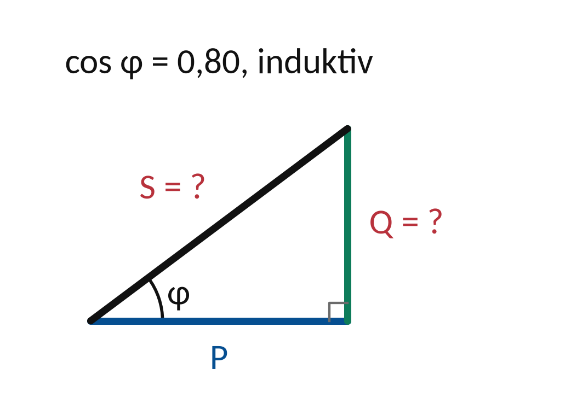
Ledtråd 1: vilket samband?
Använd S = √3 ULIL Q = S sin φ och sin φ = √(1 − cos²φ). Läs Teori 4: Trefaseffekt.
Ledtråd 2: hur börjar jag?
S är den totala skenbara effekten i VA och Q den reaktiva effekten i var, positiv för induktiv last. Räkna ut S och sin φ var för sig, multiplicera och gör om till kVA och kvar.
Ledtråd 3: steg för steg med andra tal
1) Skenbar effekt: S = √3 · UL · IL. 2) Räkna sin φ = √(1 − cos²φ). 3) Reaktiv effekt: Q = S · sin φ. Exempel ombord: 440 V, 20 A och cos φ = 0,85 ger S ≈ 15,24 kVA, sin φ = √(1 − 0,7225) ≈ 0,527 och Q ≈ 15,24 · 0,527 ≈ 8,03 kvar. Rimlighet: P, Q och S ska passa i effekttriangeln, S² = P² + Q².
Facit
S ≈ 6,93 kVA. sin φ = 0,60. Q ≈ 4,16 kvar.
Svar: S ≈ 6,93 kVA · Q ≈ 4,16 kvar
Övning 2.6: Motor 230/400 V
Motorn är märkt Δ/Y 230/400 V. Matningen är 400 V mellan faserna. Vilken koppling ger rätt märkspänning över lindningarna?
Givet: Landström vid kaj, 50 Hz. Motorn är märkt Δ/Y 230/400 V. Matningen är 400 V mellan faserna.
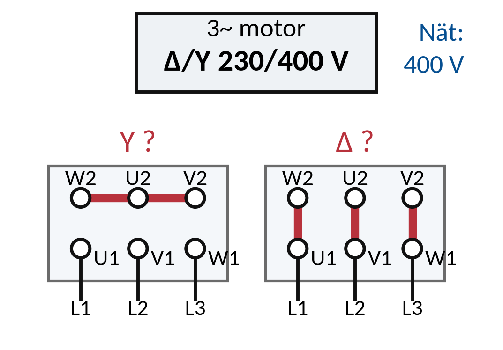
Ledtråd 1: vilken princip?
Utgå från Y: Ugren = UL/√3; Δ: Ugren = UL. Läs Teori 5: Motorns märkning.
Ledtråd 2: hur börjar jag?
Märkningen Δ/Y 230/400 V anger vilken nätspänning som gäller för varje koppling. Räkna ut spänningen över en lindning i Y och i Δ och jämför med märkningen. Motivera valet med ett värde.
Ledtråd 3: steg för steg
1) Läs märkningen: vilken nätspänning hör till Δ och vilken till Y? 2) Räkna spänningen över en lindning i Δ (hela linjespänningen) och i Y (linjespänningen/√3) på nätet i uppgiften. 3) Välj den koppling där lindningsspänningen stämmer med den lägre märkspänningen. Annat fall: ett nät med 230 V mellan faserna och samma motor. Pröva båda kopplingarna där först.
Facit
Y. Då får varje lindning 400/1,732 ≈ 231 V, vilket stämmer med 230 V. I Δ skulle varje lindning få hela 400 V, långt över märkspänningen 230 V. Motorn skulle överhettas och kunna förstöras.
Övning 2.7: Motor 400/690 V
En motor är märkt Δ/Y 400/690 V. Nätet ger 400 V mellan faserna. Vilken driftkoppling stämmer?
Givet: Landström vid kaj, 50 Hz. Nätet ger 400 V mellan faserna. Frågan gäller bara vilken koppling motorn ska ha i drift.
Ledtråd 1: vilken princip?
Utgå från Nätets UL = märkvärdet för driftkopplingen. Läs Teori 5: Motorns märkning.
Ledtråd 2: hur börjar jag?
Δ/Y-märkningen anger vilken linjespänning som gäller för respektive koppling. Jämför nätets linjespänning med respektive märkspänning. Full dokumentation styr verklig anslutning.
Ledtråd 3: steg för steg
1) Skriv upp vilken linjespänning märkningen anger för Δ och vilken för Y. 2) Jämför nätets linjespänning med de två talen. 3) Kopplingen vars märkspänning är lika med nätets är driftkopplingen. Annat fall: ombord med 440 V mellan faserna och en motor märkt Δ/Y 440/760 V. Vilken koppling passar där, och varför?
Facit
Δ. Då får varje lindning 400 V, vilket stämmer med Δ-märkningen 400 V.
Övning 2.8: Motorström från axeleffekt
En motor ger Paxel = 5,5 kW med η = 0,88 och PF = 0,80 vid UL = 400 V. Bestäm den tillförda elektriska effekten och linjeströmmen.
Givet: Landström vid kaj, 50 Hz. Paxel = 5,5 kW, η = 0,88, PF = 0,80 och UL = 400 V. Symmetrisk trefas.
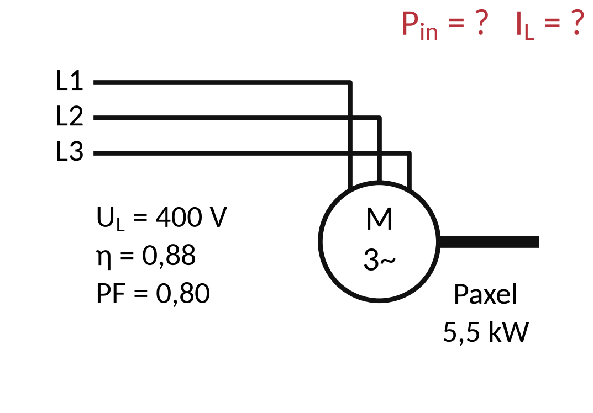
Ledtråd 1: vilket samband?
Använd Pin = Paxel/η och IL = Pin/(√3 · UL · PF). Läs Teori 6: Axeleffekt och elektrisk effekt.
Ledtråd 2: hur börjar jag?
Paxel är effekten på axeln och Pin den tillförda elektriska effekten. η och PF saknar enhet. Räkna först Pin och gör om kW till W innan du räknar linjeströmmen.
Ledtråd 3: steg för steg med andra tal
1) Axeleffekten är det motorn lämnar. Dela med verkningsgraden för att få den tillförda effekten. 2) Sätt in i IL = Pin/(√3 · UL · PF), med P i W. Exempel ombord: Paxel = 15 kW, η = 0,90, PF = 0,85 och 440 V ger Pin ≈ 16,67 kW och IL = 16 667/(1,732 · 440 · 0,85) ≈ 25,7 A. Rimlighet: den tillförda effekten ska vara större än axeleffekten.
Facit
Pin = 5,5/0,88 = 6,25 kW. IL = 6 250/(1,732 · 400 · 0,80) ≈ 11,3 A.
Svar: Pin ≈ 6,25 kW · IL ≈ 11,3 A
Övning 2.9: Transformatorns märkström
En ideal trefastransformator är märkt 100 kVA och 10 kV/400 V (linjespänningar). Bestäm linjeströmmen på sekundärsidan vid full last.
Givet: Nätstation i land. Ideal symmetrisk trefastransformator, 100 kVA och 10 kV/400 V.
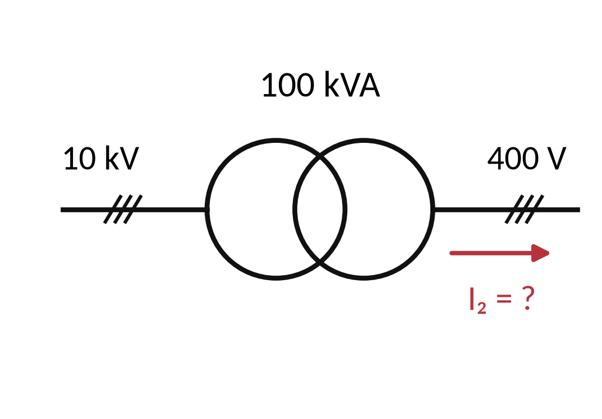
Ledtråd 1: vilket samband?
Använd I2 = S/(√3 · U2). Läs Teori 7: Trefastransformatorn.
Ledtråd 2: hur börjar jag?
S är transformatorns märkeffekt i VA. U2 och I2 är linjespänning och linjeström på sekundärsidan. Använd 100 000 VA och sekundärsidans 400 V – primärspänningen ska inte vara med här.
Ledtråd 3: steg för steg med andra tal
1) Använd märkeffekten S i VA och sekundärsidans linjespänning. 2) I = S/(√3 · U). Exempel ombord: en transformator på 250 kVA med 440 V på sekundärsidan ger I = 250 000/(1,732 · 440) ≈ 328 A. Rimlighet: lägre spänning ger högre ström för samma effekt.
Facit
I2 = 100 000/(1,732 · 400) ≈ 144 A.
Svar: I2 ≈ 144,0 A
Övning 2.10: Osymmetrisk aktiv effekt
Den aktiva effekten i de tre faserna har mätts till 1,2, 1,5 och 0,9 kW. Bestäm den totala aktiva effekten. Varför kan du inte bara ta en av fasströmmarna och sätta in i formeln för symmetrisk last?
Givet: Uppmätt effekt per fas: 1,2, 1,5 och 0,9 kW. Lasten är inte symmetrisk.
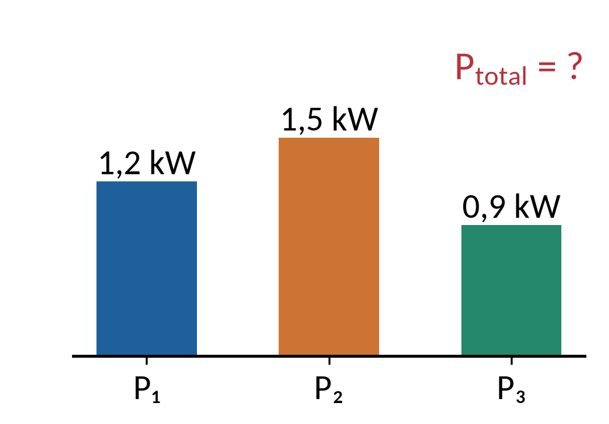
Ledtråd 1: vilket samband?
Använd Ptotal = P1 + P2 + P3. Läs Teori 4: Trefaseffekt.
Ledtråd 2: hur börjar jag?
Aktiva faseffekter kan adderas även när faslasterna är olika. Summera faseffekterna. Förklara vilken symmetri som saknas för att använda en godtycklig IL i √3-formeln.
Ledtråd 3: steg för steg med andra tal
1) Aktiv effekt adderas: lägg ihop fasernas effekter. 2) Formeln med √3 gäller bara om alla faser har samma ström och samma effektfaktor. Exempel: 2,1, 1,8 och 2,4 kW ger Ptotal = 6,3 kW. Förklara sedan varför en enda fasström inte beskriver en osymmetrisk last.
Facit
Ptotal = 3,6 kW. Formeln med √3 förutsätter lika ström och lika effektfaktor i alla faser. Här skiljer sig faserna.
Svar: Ptotal ≈ 3,6 kW
Kontrollfrågor: har du förstått delen?
Svara på de tre frågorna innan du går vidare. Ditt första svar sparas och följer med i QR-koden på sidan Skicka resultat. Det är ingen poäng, det visar vad som behöver repeteras.
Klart med delen?
Vilka märkdata behöver du innan du beräknar motorström från axeleffekt?
Lämna v41-uppgifterna före 9 oktober. Repetera instrumentval och säker arbetsberedning inför träffen.
5 Labben
Labben kommer sist i veckan, när du har gått igenom del 1–3. Du använder samma metod som i övningarna: räkna först, läs av, jämför och förklara.
Veckans labbar Veckans inlämning
Källor och fortsatt läsning
Studieplanen YH03151, 18 september 2026 Sjöskolans kursmaterial och originalmall
Schneider Electric: skenbar effekt
ABB: motorns märkning och Y/Δ
Schneider Electric: reaktiv effekt